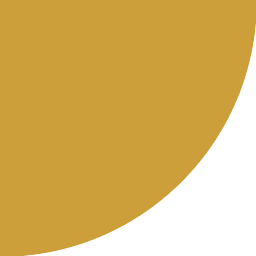

Documento de referência dos recursos atuais e do acervo. Não altera o site, os jogos ou suas regras. As peças de acervo e as propostas futuras são identificadas separadamente.
INTUIÇÃO MANUAL DA MARCA · 2026
02 / COMO LER
Uma marca, várias linguagens
Para consultar, implementar e preservar a identidade sem confundir arquivo histórico com padrão vigente.
Sistema atual
Logo de azulejos, cores, tipografia, mascotes e componentes já presentes no projeto.
Acervo preservado
Recursos antigos continuam documentados para manter origem e reversibilidade. Estar no repositório não significa estar ativo na tela.
Aplicações futuras
O ícone do futuro app está aprovado como referência. Não representa um aplicativo lançado ou pacote pronto para uma loja.
Mapa deste manual
Fundamentos e brasilidade3
Marca e aplicações4-5
Cores e tipografia6-8
Azulejos9
Mascotes: quatro versões10-13
Sprites atuais e animações legadas14-17
Acessórios de Sintonia18-19
Folhas, flores e cenários20-22
AIIJs atuais e novas aprovadas23-28
Peças, frutos e controles29-32
Catálogo de conquistas33-36
Composição e movimento37-38
Aplicações reais no site39-41
Fontes, manutenção e direitos42-44
Todas as imagens desta edição provêm de recursos reais do projeto ou de seus documentos originais. Recortes e pranchas são apresentações editoriais, não novos desenhos. Capturas, quando presentes, são identificadas como telas da aplicação.
INTUIÇÃO MANUAL DA MARCA · 2026
03 / CONCEITO
Brasilidade com função
A identidade combina a presença dos animais brasileiros, referências vegetais, água, frutos e módulos de azulejo. O vínculo não está em espalhar ornamentos: cada elemento deve orientar uma ação, construir contexto ou conectar o jogo ao conjunto.
Fauna que aproxima
Os mascotes tornam o universo reconhecível e dão personalidade aos jogadores. Uma espécie não substitui a cor, o nome e a indicação de turno.
Azulejo que organiza
Os módulos geométricos funcionam como assinatura e ritmo visual. Não devem competir com pistas nem parecer casas extras do tabuleiro.
Natureza que explica
Folhas, sementes, água e frutos podem expressar a ideia de um jogo. O desenho conserva sua função: símbolo, peça, cenário ou ilustração.
O que evitar
Clichês decorativos sem relação com a mecânica; misturas de estilos sem hierarquia; repetição excessiva de molduras; figuras adicionadas sobre controles; saturação que dificulte distinguir estados.
Este manual descreve relações visuais observáveis no projeto. Não atribui a marca a artistas, escolas ou tradições específicas sem documentação. A flora e a fauna estilizadas não são identificações científicas exaustivas.
INTUIÇÃO MANUAL DA MARCA · 2026
04 / MARCA PRINCIPAL
A assinatura do site
Matriz vigente
PNG transparente de 1800 × 420 px. Proporção 30:7. O arquivo combina o lettering Intuição e a composição de azulejos.
Uso fiel
Preservar proporção, desenho e cores do arquivo. Não reconstruir o lettering digitando o nome com uma fonte semelhante.
Espaço e leitura
Manter respiro livre ao redor da marca. Verificar legibilidade em telas estreitas sem comprimir, cortar ou sobrepor botões.
Não fazer
Não esticar. Não recortar o til ou as peças. Não adicionar a planta da marca anterior. Não usar o ícone do app como substituição automática da assinatura horizontal.
Fonte: dist/platform-assets/intuicao-logo-azulejos.png. Matriz vetorial documentada em docs/identidade/logo-site/intuicao-logo-azulejos.svg. Este manual não estabelece novos limites mínimos em pixels sem teste de uso.
INTUIÇÃO MANUAL DA MARCA · 2026
05 / APLICAÇÕES
Site, aplicativo e história
Futuro app · B aprovadaEsmalte acetinado; luz no alto à esquerda.
Marca históricaAcervo: não é a assinatura atual do site.
O ícone do futuro app usa as quatro peças, a margem nominal de 9% e a iluminação difusa da versão B aprovada. A sombra é discreta; o volume valoriza o azulejo sem transformar a composição em objeto fotográfico.
A imagem do app possui cantos transparentes e máscara já desenhada. É referência aprovada, não pacote final iOS/App Store. A preparação para cada plataforma deve preservar o desenho e obedecer aos requisitos vigentes.
Manter os arquivos históricos permite rastrear decisões, mas não autoriza voltar a misturar versões na interface.
INTUIÇÃO MANUAL DA MARCA · 2026
06 / COR
Terra, mata e azulejo
Verde estrutural
#30412F
Texto, contornos e organização
Verde destaque
#39654C
Ações e identidade vegetal
Amarelo ocre
#CCA034
Destaques e calor visual
Azul profundo
#244B63
Contraponto e ações reconhecíveis
Papel quente
#F4EDDD
Base de acolhimento
Superfície
#FFFAF0
Áreas claras de leitura
Valores registrados na paleta do projeto. A aplicação real depende dos tokens e da cascata de estilos de cada componente; estes seis tons não substituem todas as cores de estados e jogos.
Verde e azul sustentam a composição. O amarelo deve aparecer como acento legível, não como preenchimento generalizado. Fundos claros preservam respiro e reduzem peso visual.
INTUIÇÃO MANUAL DA MARCA · 2026
07 / CORES COM SIGNIFICADO
Dificuldade não é resultado
Básico
#7B817A
Referência à faixa branca em cinza
Aprendiz
#285D7C
Azul
Intermediário
#725580
Roxo
Avançado
#805D43
Marrom
Mestre
#2C302D
Preto
Modo Sábio
#A7443D
Vermelho
A sequência dos azulejos de dificuldade se inspira na progressão de faixas do jiu-jítsu definida para o produto. São marcadores da dificuldade, não uma certificação esportiva.
Conclusão independente: verde escuro. Conclusão assistida: amarelo. Erro de resposta: feedback temporário próprio. Não confundir a cor do nível com acerto, turno ou seleção. Preserve também rótulos, formas e estados acessíveis.
Literata, com peso 600 na regra global. O contraste editorial diferencia nomes e seções.
Interface
Source Sans 3 em textos, botões, formulários, contadores e texto dentro dos SVGs.
Consistência
Fontes locais WOFF2, font-display: swap e algarismos tabulares nos contadores. Evitar substituições isoladas.
Arquivos e licenças OFL em dist/assets/fonts/. A marca horizontal é uma imagem: sua tipografia não é recriada por esta regra.
INTUIÇÃO MANUAL DA MARCA · 2026
09 / AZULEJOS
Uma assinatura modular
blue-brPNG com transparência
blue-tlPNG com transparência
game-gold-brPNG com transparência

game-gold-tlPNG com transparência
game-green-tlPNG com transparência
gold-blPNG com transparência
gold-brPNG com transparência
gold-tlPNG com transparência
green-brPNG com transparência
green-tlPNG com transparência
Os recortes e a alternância cromática criam o vocabulário geométrico da marca. As versões indicam orientação; o arquivo não deve ser espelhado casualmente quando o encaixe tem função de composição.
Transparência
Usar o canal alfa para integrar as peças ao fundo. Não acrescentar retângulo branco à imagem.
Tabuleiros
Os detalhes ficam nos cantos definidos, sem cobrir peças, pistas, texto ou áreas de clique.
Escala
Reduzir sem destruir a leitura do recorte. A assinatura não deve competir com a área de jogo.
INTUIÇÃO MANUAL DA MARCA · 2026
10 / MASCOTES
Fauna · catálogo 1/3
Quinze mascotes institucionais. A mesma identidade em frente e perfil.
Quatro apresentações originais, sem redesenho. Os recortes reproduzem o enquadramento documentado dos atlas. As pranchas inversas foram recuperadas dos PDFs originais; não são recolorações inventadas.
INTUIÇÃO MANUAL DA MARCA · 2026
11 / MASCOTES
Fauna · catálogo 2/3
Quinze mascotes institucionais. A mesma identidade em frente e perfil.
Quatro apresentações originais, sem redesenho. Os recortes reproduzem o enquadramento documentado dos atlas. As pranchas inversas foram recuperadas dos PDFs originais; não são recolorações inventadas.
INTUIÇÃO MANUAL DA MARCA · 2026
12 / MASCOTES
Fauna · catálogo 3/3
Quinze mascotes institucionais. A mesma identidade em frente e perfil.
Quatro apresentações originais, sem redesenho. Os recortes reproduzem o enquadramento documentado dos atlas. As pranchas inversas foram recuperadas dos PDFs originais; não são recolorações inventadas.
INTUIÇÃO MANUAL DA MARCA · 2026
13 / FAUNA
Como preservar os mascotes
Desenho reconhecível
Não modificar proporções de olhos, focinho, orelhas ou cabeça para aproximar animais diferentes. Preservar silhuetas e espaços negativos.
Enquadramento fiel
As imagens são atlas: o código usa coordenadas e máscaras. Trocar a dimensão do arquivo sem atualizar os recortes pode mostrar o animal vizinho.
Contraste deliberado
Verde sobre branco e branco sobre verde têm arquivos originais próprios. Aplicar a versão adequada ao fundo, mantendo os vazados.
Os nomes seguem o catálogo institucional. Mico, cobra-coral e tatu-bola não identificam automaticamente uma espécie única. A descrição educativa pode explicitar uma referência biológica sem afirmar que um desenho estilizado permite identificação taxonômica.
Conferência de origem: as pranchas verde/branco extraídas dos PDFs históricos são idênticas pixel a pixel aos PNGs atuais de frente e lado. As pranchas branco/verde acompanham o mesmo conjunto original.
Fontes: dist/fauna-art.mjs, dist/fauna-info-content.mjs, dist/platform-assets/fauna-green-original.png e fauna-side-original.png.
Distinção importante: a galeria institucional tem 15 mascotes; o catálogo atual de sprites de Sintonia contém 16 entradas, incluindo Quati. O manual preserva os dois conjuntos sem inventar um 16º ícone institucional.
INTUIÇÃO MANUAL DA MARCA · 2026
15 / SPRITES
Quatro personagens de referência
Tuiuiú, capivara, bem-te-vi e mico-leão-dourado. O atlas SVG 4 × 1 enquadra a primeira linha do PNG original, preservando desenho e transparência.
Fonte: dist/sintonia/assets.mjs. Este arquivo e o roster 4 × 4 são apresentações distintas do acervo. O recorte mantém os pixels originais; não é um novo redesenho.
Versões de animações legadas. Estes quatro atlas preservam as animações antigas da capivara, tuiuiú, bem-te-vi e mico-leão-dourado. Não são os sprites ativos de Sintonia. Cada sequência possui 16 quadros e permanece aqui apenas como registro do acervo.
Acervo legado documentado em docs/sintonia-art.md. O catálogo ativo é animal-roster.mjs → chibi-user-roster.svg, grade 4 × 4 com 16 animais, incluindo Quati. Não reativar estas animações ou substituir os sprites atuais por estes atlas sem uma decisão específica.
Versões de animações legadas. Estes quatro atlas preservam as animações antigas da capivara, tuiuiú, bem-te-vi e mico-leão-dourado. Não são os sprites ativos de Sintonia. Cada sequência possui 16 quadros e permanece aqui apenas como registro do acervo.
Acervo legado documentado em docs/sintonia-art.md. O catálogo ativo é animal-roster.mjs → chibi-user-roster.svg, grade 4 × 4 com 16 animais, incluindo Quati. Não reativar estas animações ou substituir os sprites atuais por estes atlas sem uma decisão específica.
Arquivos reais do catálogo de acessórios. Sufixos numéricos distinguem estados ou variações. Conservar o significado definido nas regras; não usar uma porta, chave ou alvo como decoração ambígua.
Arquivos reais do catálogo de acessórios. Sufixos numéricos distinguem estados ou variações. Conservar o significado definido nas regras; não usar uma porta, chave ou alvo como decoração ambígua.
As folhas constroem o vínculo com o universo natural; a flor e o selo botânico aparecem em aplicações específicas. O branco da flor não deve desaparecer sobre superfícies claras: preservar a variante adequada.
Catálogo de recursos, não instrução para reativar todos os ornamentos. A existência de variantes em dist/platform-assets não significa que todas estejam visíveis na página atual.
Recursos preservados no repositório, incluindo composições históricas. Não devem ser reinseridos indiscriminadamente: a interface vigente privilegia respiro, controles compactos e protagonismo do tabuleiro.
Recursos preservados no repositório, incluindo composições históricas. Não devem ser reinseridos indiscriminadamente: a interface vigente privilegia respiro, controles compactos e protagonismo do tabuleiro.
INTUIÇÃO MANUAL DA MARCA · 2026
20 / AIIJ
Uma ilustração para cada ideia 1
PulsoRecurso existente da aplicação
FozRecurso existente da aplicação
RefúgioRecurso existente da aplicação
AIIJ significa Arte de Ilustração Individual do Jogo. A composição deve explicar uma atmosfera ou princípio visual sem se confundir com o tabuleiro, as regras ou objetos clicáveis.
Preservar
Não substituir uma AIIJ já aprovada por um desenho novo apenas para unificar o catálogo.
Integrar
Reusar cores, transparência e linguagem de contornos; a identidade do jogo não exige mudar a identidade do site.
Completar
Novas AIIJs para jogos sem arte própria devem passar por prévia e aprovação, mantendo as já existentes.
Estas seis famílias já estavam na base consultada e foram preservadas. As páginas seguintes mostram as onze novas AIIJs aprovadas, com o estado de integração desta revisão. Sintonia e Estalo ainda estão pendentes: a coleção de 19 jogos não é apresentada como definitivamente completa.
INTUIÇÃO MANUAL DA MARCA · 2026
20 / AIIJ
Uma ilustração para cada ideia 2
MiranteRecurso existente da aplicação
RenovoRecurso existente da aplicação
DesvioRecurso existente da aplicação
AIIJ significa Arte de Ilustração Individual do Jogo. A composição deve explicar uma atmosfera ou princípio visual sem se confundir com o tabuleiro, as regras ou objetos clicáveis.
Preservar
Não substituir uma AIIJ já aprovada por um desenho novo apenas para unificar o catálogo.
Integrar
Reusar cores, transparência e linguagem de contornos; a identidade do jogo não exige mudar a identidade do site.
Completar
Novas AIIJs para jogos sem arte própria devem passar por prévia e aprovação, mantendo as já existentes.
Estas seis famílias já estavam na base consultada e foram preservadas. As páginas seguintes mostram as onze novas AIIJs aprovadas, com o estado de integração desta revisão. Sintonia e Estalo ainda estão pendentes: a coleção de 19 jogos não é apresentada como definitivamente completa.
INTUIÇÃO MANUAL DA MARCA · 2026
20 / AIIJS APROVADAS
Nova coleção · aprovadas 1/4
ReflexosPR #136 · integrada no GitHub
Corte CertoPR #136 · integrada no GitHub
EloPR #136 · integrada no GitHub
Estas ilustrações foram aprovadas pelo titular. São arquivos SVG transparentes reais, preservados do trabalho de implementação; não são opções alternativas nem capturas de uma interface publicada.
Estado de 16/11/2026: oito AIIJs integradas pelo PR #136 (cba39166), sem publicação verificada nesta revisão. Prumo, Pacto e Quinhão: versões A aprovadas, PR #138 integrado (1f774de9), sem implantação verificada nesta revisão. Sintonia e Estalo continuam em revisão. A aprovação visual não comprova implantação no site.
A coleção definitiva será consolidada após a aprovação das duas artes restantes e a verificação de integração. As seis AIIJs anteriores permanecem intactas.
INTUIÇÃO MANUAL DA MARCA · 2026
20 / AIIJS APROVADAS
Nova coleção · aprovadas 2/4
RepassePR #136 · integrada no GitHub
BrotoPR #136 · integrada no GitHub
CercoPR #136 · integrada no GitHub
Estas ilustrações foram aprovadas pelo titular. São arquivos SVG transparentes reais, preservados do trabalho de implementação; não são opções alternativas nem capturas de uma interface publicada.
Estado de 16/11/2026: oito AIIJs integradas pelo PR #136 (cba39166), sem publicação verificada nesta revisão. Prumo, Pacto e Quinhão: versões A aprovadas, PR #138 integrado (1f774de9), sem implantação verificada nesta revisão. Sintonia e Estalo continuam em revisão. A aprovação visual não comprova implantação no site.
A coleção definitiva será consolidada após a aprovação das duas artes restantes e a verificação de integração. As seis AIIJs anteriores permanecem intactas.
INTUIÇÃO MANUAL DA MARCA · 2026
20 / AIIJS APROVADAS
Nova coleção · aprovadas 3/4
MosaicoPR #136 · integrada no GitHub
AcordePR #136 · integrada no GitHub
Prumo · versão APR #138 · integrada no GitHub
Estas ilustrações foram aprovadas pelo titular. São arquivos SVG transparentes reais, preservados do trabalho de implementação; não são opções alternativas nem capturas de uma interface publicada.
Estado de 16/11/2026: oito AIIJs integradas pelo PR #136 (cba39166), sem publicação verificada nesta revisão. Prumo, Pacto e Quinhão: versões A aprovadas, PR #138 integrado (1f774de9), sem implantação verificada nesta revisão. Sintonia e Estalo continuam em revisão. A aprovação visual não comprova implantação no site.
A coleção definitiva será consolidada após a aprovação das duas artes restantes e a verificação de integração. As seis AIIJs anteriores permanecem intactas.
INTUIÇÃO MANUAL DA MARCA · 2026
20 / AIIJS APROVADAS
Nova coleção · aprovadas 4/4
Pacto · versão APR #138 · integrada no GitHub
Quinhão · versão APR #138 · integrada no GitHub
Estas ilustrações foram aprovadas pelo titular. São arquivos SVG transparentes reais, preservados do trabalho de implementação; não são opções alternativas nem capturas de uma interface publicada.
Estado de 16/11/2026: oito AIIJs integradas pelo PR #136 (cba39166), sem publicação verificada nesta revisão. Prumo, Pacto e Quinhão: versões A aprovadas, PR #138 integrado (1f774de9), sem implantação verificada nesta revisão. Sintonia e Estalo continuam em revisão. A aprovação visual não comprova implantação no site.
A coleção definitiva será consolidada após a aprovação das duas artes restantes e a verificação de integração. As seis AIIJs anteriores permanecem intactas.
INTUIÇÃO MANUAL DA MARCA · 2026
21 / PEÇAS DO JOGO
Sementes, folhas e frutos
SementeRenovo · arte existente
BotãoRenovo · arte existente
FolhaRenovo · arte existente
Castanha-do-paráQuinhão · arte existente
PitangaQuinhão · arte existente
JabuticabaQuinhão · arte existente
Renovo associa formas vegetais à ligação entre peças. Os tracinhos da folha preservam a identidade aprovada. Quinhão distingue os frutos pela forma e pela legenda, não apenas por cor.
Exemplos extraídos diretamente das funções pieceSymbol e renderFruitArt. Não são redesenhos. O significado mecânico e a numeração de cada peça permanecem no motor do jogo.
INTUIÇÃO MANUAL DA MARCA · 2026
22 / PEÇAS DO JOGO
Formas que ajudam a jogar
Broto · jogador 1Folhas largas e pontudas, respectivamente
Broto · jogador 2Folhas largas e pontudas, respectivamente
Mirante · símbolo 1Geometria do módulo de arte
Mirante · símbolo 2Geometria do módulo de arte
A diferenciação entre jogadores precisa sobreviver quando a cor não basta. Broto combina silhueta, cor e informação textual. Outros jogos usam contorno, posição e geometria para dar legibilidade.
As formas são amostras dos módulos de arte. Estados, tamanhos e cores contextuais devem ser conferidos no componente real; não alterar a mecânica em nome da composição.
INTUIÇÃO MANUAL DA MARCA · 2026
23 / INTERFACE
Pictogramas de navegação
acorde
broto
cerco
cut
desvio
divisa
dobra
elo
enlace
estalo
foz
lastro
light
mirante
mosaico
orbita
pacto
prumo
pulso
quinhao
refugio
renovo
repasse
sintonia
vazante
Catálogo do módulo game-nav-icons.mjs. Pode incluir chaves legadas de jogos retirados; isto não altera a lista atual de 19 jogos. Identificar itens pela lista ativa, não por contar os SVGs do acervo.
INTUIÇÃO MANUAL DA MARCA · 2026
23 / CONTROLES
Reconhecer antes de ler
Confirmar respostaPictograma original de controle
DesfazerPictograma original de controle
RefazerPictograma original de controle
ReiniciarPictograma original de controle
Um check confirma. Setas opostas distinguem desfazer e refazer. O gesto de reinício tem identidade própria. A ausência de texto visível nas setas não elimina o nome acessível do botão.
Rótulo acessível
Manter o nome da ação no controle mesmo quando a interface usa só o ícone.
Estados claros
Desabilitado, selecionado e foco precisam ser perceptíveis, sem depender de animação.
Área útil
Botões compactos reduzem ruído, mas devem continuar fáceis de acionar por toque e teclado.
SVGs originais extraídos de campaign-action-buttons.css. Este catálogo mostra o símbolo, não congela a dimensão ou o estilo final dos botões: conferir a cascata vigente da interface.
Catálogo de 74 desenhos disponíveis no módulo de ícones. A roseta utiliza o acabamento de conquista obtida. A presença do desenho não comprova missão ativa, nível concluído ou recurso futuro já implementado.
INTUIÇÃO MANUAL DA MARCA · 2026
24 / CONQUISTAS
Medalhas e pictogramas 2/4
efficiency-proven-minimum
elo-distance
elo-exclusive
enlace-corrente-acesa
enlace-travessia
estalo-cadeia-limpa
estalo-cadeia-longa
fifty
first
foz-confluence
foz-long-course
half
hard
hundred
lastro-ultimo-ajuste
lastro-volta-ao-centro
light-color-gates
light-light-jump
light-three-colors
mirante-four-witnesses
Catálogo de 74 desenhos disponíveis no módulo de ícones. A roseta utiliza o acabamento de conquista obtida. A presença do desenho não comprova missão ativa, nível concluído ou recurso futuro já implementado.
Catálogo de 74 desenhos disponíveis no módulo de ícones. A roseta utiliza o acabamento de conquista obtida. A presença do desenho não comprova missão ativa, nível concluído ou recurso futuro já implementado.
Catálogo de 74 desenhos disponíveis no módulo de ícones. A roseta utiliza o acabamento de conquista obtida. A presença do desenho não comprova missão ativa, nível concluído ou recurso futuro já implementado.
INTUIÇÃO MANUAL DA MARCA · 2026
25 / COMPOSIÇÃO
O tabuleiro é o protagonista
Hierarquia
Nome e categoria orientam; regras introduzem; tabuleiro concentra a atenção; controles apoiam a ação. Evitar títulos e espaços desproporcionais.
Estabilidade
A área de jogo não deve variar de tamanho a cada jogada. Textos de estado e contadores precisam de regiões previsíveis.
Coesão
Mesma tipografia, linguagem de botões e ritmo de espaçamento entre jogos, mantendo diferenças reais entre campanhas e versus.
Sem ruído visual
Evitar divisórias redundantes, linhas decorativas sem função e múltiplas molduras concorrentes. Ícones de informação devem ter respiro das bordas. A arte não deve cortar folhas, ocultar peças nem reduzir excessivamente o tabuleiro.
Este manual consolida decisões do produto. Não substitui inspeção em contexto, testes de teclado, revisão em telas estreitas ou a confirmação das regras reais.
INTUIÇÃO MANUAL DA MARCA · 2026
26 / MOVIMENTO
Celebrar sem desorientar
Vitória
Nos jogos de nível, o feedback aparece sobre a área do tabuleiro e usa azulejos e uma palavra de celebração. O avanço deve ser uma ação clara.
Resposta incorreta
O feedback temporário contorna a área de jogo e indica o erro sem depender só da cor. Não deslocar permanentemente o tabuleiro.
Como jogar
Os exemplos ilustram regras em loop. Sua leitura deve acompanhar o texto, com alinhamento, escala e espaço proporcionais.
Respeitar movimento reduzido e não tornar uma animação a única forma de perceber o resultado. O jogador deve compreender o estado mesmo sem transições.
Medalhas especiais 3D de mascotes e futura área de perfil/Ateliê têm processo próprio de aprovação. Não são confundidas aqui com as rosetas existentes, nem declaradas como coleção publicada.
INTUIÇÃO MANUAL DA MARCA · 2026
27 / APLICAÇÃO REAL
A marca na biblioteca
Captura real da biblioteca, 16/11/2026, sem cursor e sem dados pessoais. Os 19 jogos aparecem em suas três categorias. A imagem mostra a interface existente, não um mockup.
INTUIÇÃO MANUAL DA MARCA · 2026
27 / APLICAÇÃO REAL
Da folha ao tabuleiro
Refúgio. Folhas, cores dos marcos, detalhes de azulejo e controles laterais na fase 1.
Renovo. Semente, botão e folha aplicados à área de jogo na fase 1.
Capturas reais de 16/11/2026. Enquadramento da área de jogo; sem cursor ou dados pessoais. Nenhum elemento foi redesenhado para estas imagens.
INTUIÇÃO MANUAL DA MARCA · 2026
27 / APLICAÇÃO REAL
O mascote em ação
Sintonia. Sprites e acessórios aparecem dentro de um sistema de movimentos. A legibilidade da regra continua sendo responsabilidade do tabuleiro e da interface, não do carisma do personagem.
Captura real da fase 1, 16/11/2026, em sessão de teste limpa. Base de captura: main 5a5081, incorporada no checkout documental 66aed842. O acervo do manual foi extraído da base anterior e18f2b53; estas telas mostram as correções de execução posteriores.
Ícones produzidos por código devem manter uma fonte única de desenho. A versão deste manual é documental: não deve substituir automaticamente arquivos do runtime.
INTUIÇÃO MANUAL DA MARCA · 2026
28 / CONSERVAÇÃO
Atualizar com rastreabilidade
Identificar o arquivo original e os componentes que o consomem.
Preservar proporções, coordenadas de atlas e significados de cor.
Registrar origem, autor/titular, licença, data e hash dos novos arquivos.
Conferir transparência, cortes, legibilidade e contraste no uso real.
Testar desktop, telas estreitas, teclado e movimento reduzido.
Capturar a interface sem cursor nem dados privados.
Atualizar manual, README e inventário na mesma alteração temática.
Preservar o histórico e submeter decisões criativas para aprovação.
A reprodução dos recursos neste documento organiza o acervo; não aprova novas aplicações. Variantes futuras devem explicar o problema resolvido e o que permanece igual.
Base consultada: repositório público Intuição, main obtida em 16/11/2026, referência de trabalho e18f2b53 (PR #133). O site pode evoluir após esta captura documental.
INTUIÇÃO MANUAL DA MARCA · 2026
29 / ORIGEM E DIREITOS
Créditos, fontes e limites
Intuição é o projeto de Luigi Scofano de Araujo. O repositório registra uma declaração de autoria do titular em 01/11/2026 para os elementos autorais. Essa declaração não equivale a verificação independente, registro oficial ou autorização irrestrita de terceiros.
O código e os textos autorais seguem a licença do repositório. Marca, ilustrações, sprites e demais recursos visuais têm regime próprio e não devem ser considerados liberados pela licença MIT do código. As fontes Literata e Source Sans 3 mantêm seus arquivos OFL. Materiais externos conservam termos próprios; o contorno cartográfico de Natural Earth é identificado na documentação.
Existem pendências documentais de direitos no inventário consultado. O manual não declara que todas estejam resolvidas e não concede uma nova licença de uso das artes.
Pranchas inversas: Intuicao_Icones_Fauna_Frente_Branco_sobre_Verde.pdf e Intuicao_Icones_Fauna_Lado_Branco_sobre_Verde.pdf, do acervo original do projeto. As imagens foram extraídas sem redesenho.